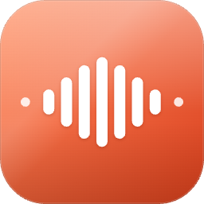

Recast
iPhone 녹음을 whisper로 트랜스크립션하고
Claude CLI로 요약·정리하는 macOS 데스크탑 앱
다운로드
macOS 12.0 이상 · Apple Silicon & Intel 지원 · v0.1.0
설치 방법
- 위에서 맞는 DMG를 다운로드
- 더블클릭 → Recast.app을 Applications 폴더로 드래그
- 처음 실행 시 Gatekeeper 경고가 뜹니다 (비서명 빌드). 터미널에서 한 번만 실행:
xattr -d com.apple.quarantine /Applications/Recast.app - Applications에서 Recast를 실행
전제 조건
Claude Code CLI가 설치되어 있어야 합니다.
claude 명령이 PATH에 있고 로그인된 상태여야 요약 기능이 동작합니다.
ffmpeg와 whisper는 앱에 번들되어 있어 별도 설치 불필요합니다.
주요 기능
🎙️ 번들된 whisper 트랜스크립션
오프라인에서 한국어 음성을 텍스트로. 모델은 첫 실행 시 자동 다운로드.
✨ Claude CLI 요약
TL;DR · 개요 · 동적 토픽 섹션 · 액션 아이템 자동 추출.
📄 Markdown 내보내기
제목·소제목·불릿이 구분된 깔끔한 Markdown 파일로 저장.
🎧 오디오 재생
상세 화면에서 바로 원본 오디오 재생, 파형 탐색 지원.
📥 드래그앤드롭 임포트
m4a · mp3 · wav · aac · flac · ogg · webm · mp4 지원.
🌓 라이트/다크 테마
Apple 네이티브 분위기의 3칼럼 레이아웃.
문제 해결
"'claude' 명령을 찾을 수 없습니다" — 앱이 claude 실행 파일을 찾지 못한 경우. 터미널에서 which claude로 경로 확인 후, 해당 경로를 환경변수로 지정해서 재실행:
RECAST_CLAUDE_CMD=/your/path/to/claude open -a Recast오버레이에 표시되는 "후보 경로 체크 결과"를 보면 어디를 찾아봤는지 확인할 수 있습니다.